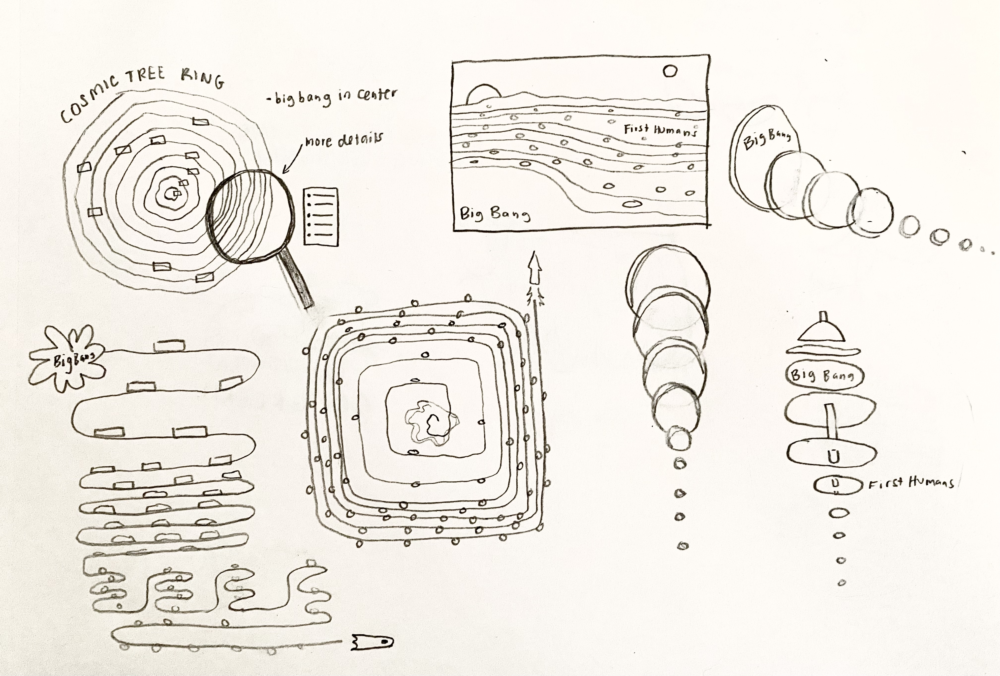
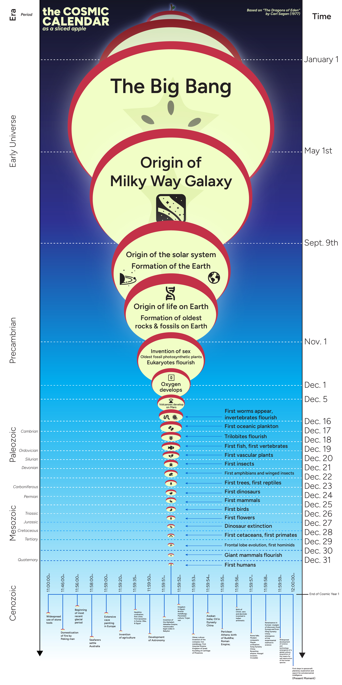

Cosmic Apple
Role: Designer
|
Timeline: Two days
|
Tools: Adobe Illustrator, After Effects, Procreate
Overview:
In a course titled Information Design, our task was to create a cosmic calendar visualization that addresses a core challenge of information design: how to represent complex multidimensional realities on a flat, two-dimensional surface. Constraints were 6ft in any direction.
The goal was to increase the information dimensions beyond calendar squares and enable viewers to more fully grasp the broader context described in The Dragons of Eden (Carl Sagan's book) which speaks on representations of time and the scale of events, and points towards our brief and fragile tenure.
The Main Question(s):
How can I approach the cosmic calendar in a different angle that is engaging and though-provoking? How can I illustrate this without losing detail or sacrificing information density?
The Process:
In my brainstorming stage, what struck me was how breif of a moment our entire history of being on Earth is in comparison to the origins of the Universe. In a calendar view, our human history doesn't begin until the last seconds of New Year's Eve. I wanted to communicate this small speck in the vastness of all that we know of, while emphasizing the way that we only exist in this context of what came before us.
I began sketching designs that revolved around this large start and small ending where things start to speed up. I experimented with the concepts of a tree ring, a geologic map showing layers of history stacked upon one another, and eventually thought about russian nesting dolls where circles live within one another.
This led to a landscape design of the circles, justified to the bottom of the timeline. After some feedback and adjustments, I rotated it on its side to be vertical, center-aligned the circles, and bingo!
The Outcome:
The Cosmic Apple was created. At the core of the apple, the large central slice is the Big Bang, the formation of our Milky Way Galaxy, the formation of Earth — the core of our existence. The left side is labeled with the era and periods while the right is the time in the calendar year. The top slice and stem of the apple are intentionally left unlabeled to evoke curiousity among viewers: what could have been before the Big Bang? Maybe there exists an entire tree that produced this one apple.
Following down the slices, as the apple rounds, the slices get smaller and thinner until we reach the period of human activity on Earth up until the present moment where our slice is the tiniest bit of apple skin on the edge. An apple, famous in literature, mythology, fairy tales, and folklore, and is representative of knowledge itself, felt like the perfect metaphor for the Universe's history.
Furthering this idea led me to develop a small brand identity for a conceptual space museum called Cosmic Core Space Museum. In a course titled Type in Motion, I created a small introductory scene of its website and some of the interactions. The frames of the apple and branch trees were drawn in Procreate, vectorized in Illustrator, and animated in After Effects.

